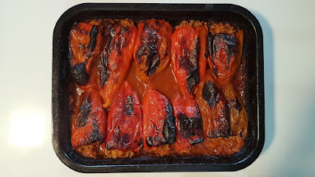

Piperki polneti or stuffed peppers, are also very popular dish in Macedonia. Peppers are stuffed with ground meat with rice and spices then baked in the oven. The important thing about baking is that you need to keep them moisture all the time, you don't want them to turn out dry or with uncooked grains of rice, right?
Another awesome thing about stuffed peppers are the peppers you use. We're blessed here in Macedonia to have the best peppers in the world, those who've tried Macedonian peppers know what I mean. That's why we prepare peppers in various ways and we use them a lot especially during summer. The best variety for stuffing peppers is "ajvarka" the one we use when making ajvar, you can read more about this variety here. Otherwise, you can use what's available in your country, if you grow your own peppers in the backyard - use those.
Ingridients
- around 15 peppers(less if the peppers are big
- 500g mixed (pork and veal) minced meat (18oz)
- 200g of rice(7oz)
- 1 teaspoon paprika
- 1 average head chopped onion
- 2 teaspoons dried vegetable seasoning(Vegeta)
- 1 teaspoon dried or fresh parsley
- 4 cups of water
- 500ml tomato sauce(2 cups)
- 1 tbs flour dissolved on half a cup of cold water
- oil
Preparation
- First, fry the chopped onion, in 5-6 minutes, add meat, salt and spices and cook for ten minutes. Add rice and paprika in the end.
- Wash and clean peppers from the seeds and stalks.
- Fill the peppers with the prepared mixture. Use teaspoon for filling.
- You can close the peppers with pieces of tomato or potato or just leave them open like I do.
- Arrange peppers in a larger baking tray, add the water so the peppers are more than half covered with water, add the tomato sauce and the dissolved flour and a little oil on top.
- Put them in heated oven to bake at 250 C (480 F).
- Leave them to bake until roasted well. Baking time is about 90 minutes for fatter peppers, or about 60 minutes for thinner ones and there's no need to flip them over during baking. If needed, add a little more water during baking.